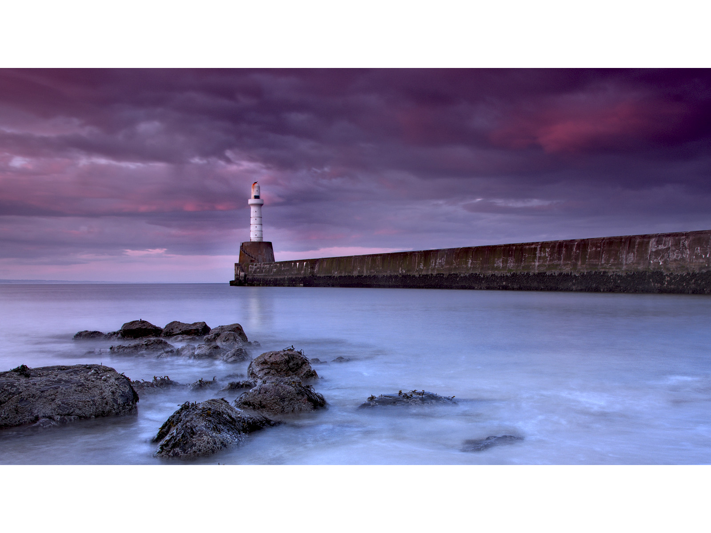
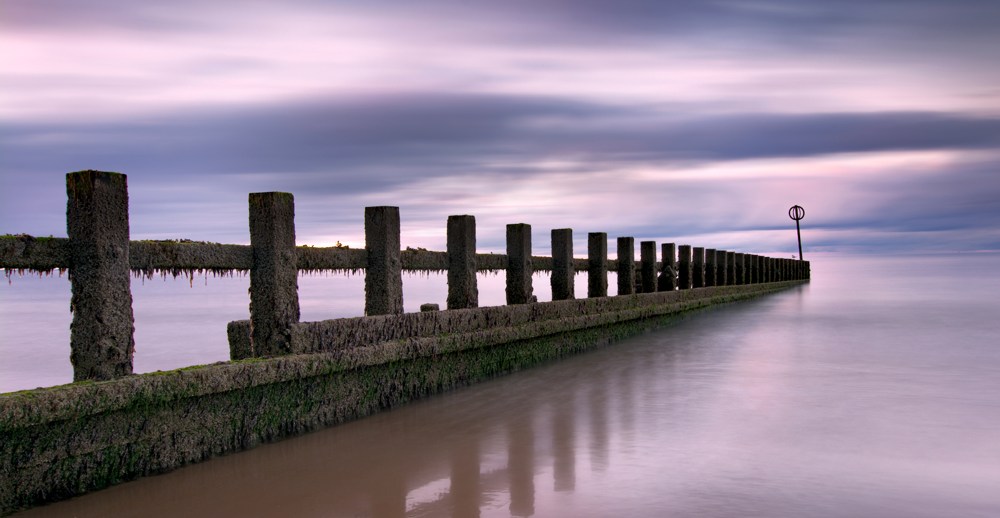
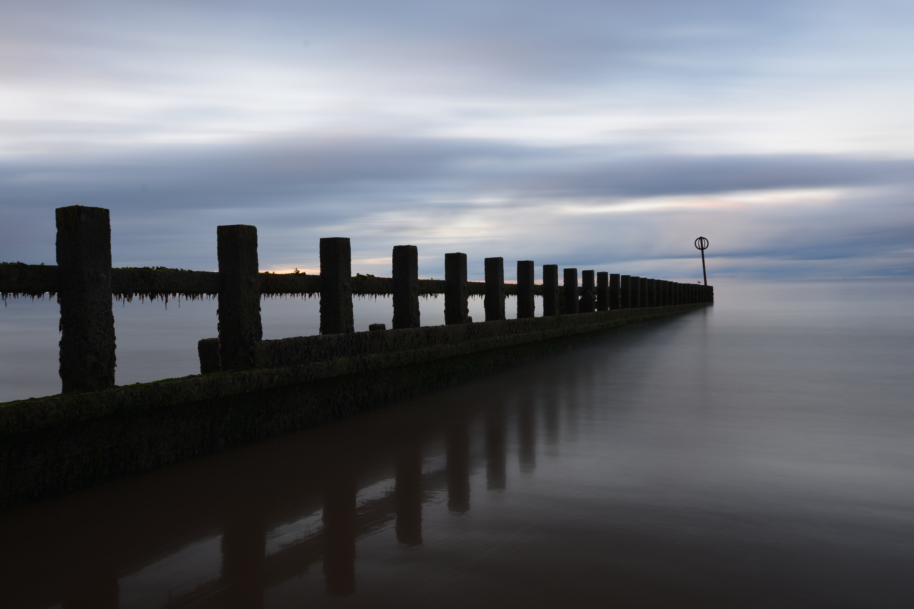
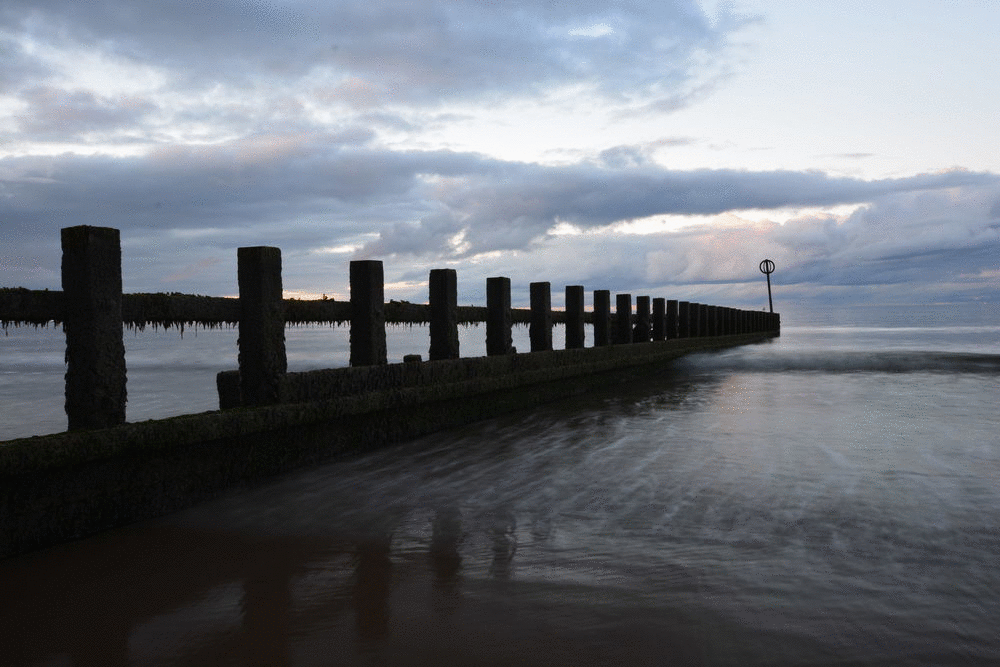
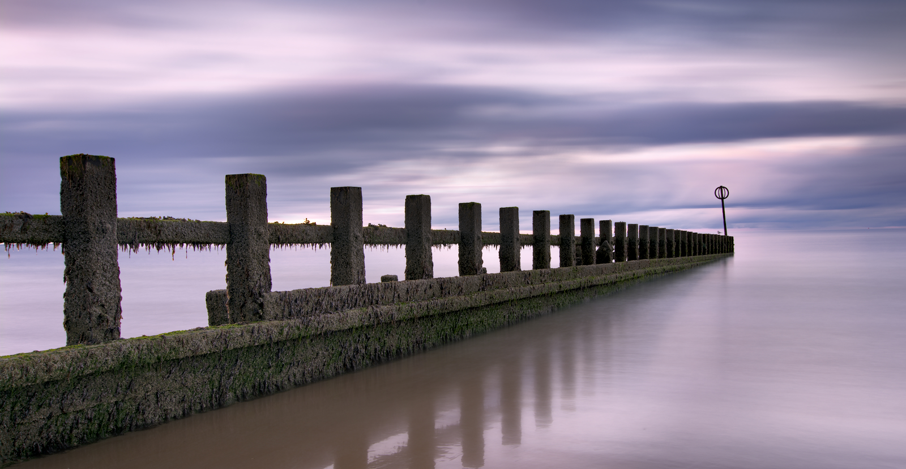
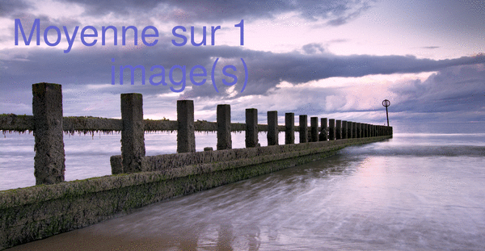

Les expositions longues sont à la mode ces dernières années. On aime ou
on n'aime pas les expositions... Certainement, l'aspect n'est pas le plus naturel
et l'image peut paraître surfaite. Personnellement, je trouve
ça très esthétique. J'aime aussi la sérénité qui s'en dégage.
Je trouve également gratifiant de créer une image qui soit différente
de la réalité !
Réaliser une vraie longue exposition nécessite une faible luminosité. Cela
peut s'obtenir en se levant tôt, en se couchant tard et/ou en utilisant des filtres (ND filter).
Ci-dessous, une image obtenue après le coucher du soleil. La durée d'exposition
est de 30 secondes.

Si tu n'as pas de filtres et que tu n'es pas un(e) lève tôt, il est possible de
créer une longue exposition en post-processing.
Dans ce post, j'explique comment obtenir l'effet longue exposition ci-dessous en traitant
une pile d'image avec imagemagick :

Prise de vues
S'il y a trop de lumière pour effectuer une exposition de plusieurs secondes, il est possible de
de réaliser plusieurs expositions (aussi longues que possible), puis de les associer en post-processing.
Pour cela, je réalise une succession d'image. J'utilise un trépied, des réglages manuels, désactive l'autofocus
puis utilise l'intervalomètre intégré à mon Nikon D5200. Les techniques de prise de vue et de processing sont très similaires
à celles utilisées pour les timelapses. Regarde le billet qui y est consacré pour plus de détails.
Ce coucher de soleil n'a rien de fantastique.
Une longue exposition peut
transformer un scène banale et une photo beaucoup plus graphique.
Une fois ces photos transférées sur l'ordinateur, j'utilise la fonction
average (moyenne) d'imagemagick pour avoir une idée du rendu :
convert -average *.JPG SimulatedTimelapseInit.JPG
En calculant la moyenne sur 65 images (chacune ayant un temps d'exposition d'une seconde)
j'obtiens une image correspondant à une exposition de 65 secondes.

Post-processing
L'image obtenue ressemble clairement à une longue exposition... Elle est aussi triste et fade !
Les détails sont perdus dans le noir de la structure en bois et l'image est un dégradé de gris.
Pour y remédier, je charge l'ensemble des images dans darktable, et je développe la première. J'augmente
le contraste, fait varier la luminosité avec différents masques, augmente les saturations, ajuste le cadrage etc.
Cela me permet d'obtenir l'image ci-dessous, bien plus colorée :

Je duplique le processing à l'ensemble des images que j'exporte ensuite. J'appelle de nouveau
la commande imagemagick pour obtenir cette image :

Pour aller plus loin
Cette technique permet également (une fois rentré au chaud) de modifier
virtuellement la durée de l'exposition. Dans un prochain billet, je
montrerai comment obtenir une image combinant différentes durée d'expositions.
